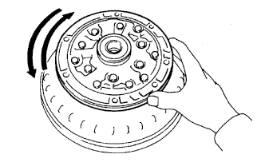

МАСЛЯНЫЙ НАСОС > ПРОВЕРКА |
| 1. ПРОВЕРЬТЕ КОРПУС ПЕРЕДНЕГО МАСЛЯНОГО НАСОСА |
С помощью индикатора часового типа измерьте внутренний диаметр втулки корпуса масляного насоса.
| 2. ПРОВЕРЬТЕ ВАЛ СТАТОРА В СБОРЕ |
С помощью индикатора часового типа измерьте внутренний диаметр втулки вала статора.
| Передняя сторона | Задняя сторона |
| 21,58 мм (0,8496 дюйма) | 27,08 мм (1,0661 дюйма) |
| 3. ПРОВЕРЬТЕ ЗАЗОР КОРПУСА ПЕРЕДНЕГО МАСЛЯНОГО НАСОСА |
Прижмите ведомую шестерню к одной из сторон корпуса.
С помощью комплекта плоских щупов измерьте зазор корпуса.
С помощью комплекта плоских щупов измерьте зазор между вершинами зубьев ведущей и ведомой шестерен.
С помощью стальной поверочной линейки и комплекта плоских щупов измерьте боковой зазор обеих шестерен.
| Метка | Заданные условия |
| M | 11,690 - 11,699 мм (0,4602 - 0,4606 дюйма) |
| N | 11,700 - 11,709 мм (0,4606 - 0,4610 дюйма) |
| P | 11,710 - 11,720 мм (0,4610 - 0,4614 дюйма) |
| R | 11,721 - 11,730 мм (0,4615 - 0,4618 дюйма) |
| S | 11,731 - 11,740 мм (0,4618 - 0,4622 дюйма) |
| 4. ПРОВЕРЬТЕ ВРАЩЕНИЕ ВЕДУЩЕЙ ШЕСТЕРНИ МАСЛЯНОГО НАСОСА |
|  |
Убедитесь, что ведущая шестерня вращается плавно.
Снимите масляный насос с гидротрансформатора.